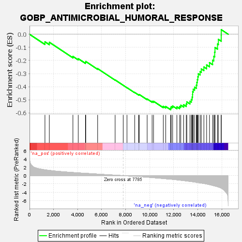

| | | Dataset | all_genes |
| Phenotype | NoPhenotypeAvailable |
| Upregulated in class | na_neg |
| GeneSet | GOBP_ANTIMICROBIAL_HUMORAL_RESPONSE |
| Enrichment Score (ES) | -0.57548344 |
| Normalized Enrichment Score (NES) | -1.8581251 |
| Nominal p-value | 0.0 |
| FDR q-value | 0.03249396 |
| FWER p-Value | 0.752 |
Table: GSEA Results Summary

Fig 1: Enrichment plot: GOBP_ANTIMICROBIAL_HUMORAL_RESPONSE
Profile of the Running ES Score & Positions of GeneSet Members on the Rank Ordered List
| SYMBOL | RANK IN GENE LIST | RANK METRIC SCORE | RUNNING ES | CORE ENRICHMENT | | 1 | CCL2 | 1284 | 1.413 | -0.0573 | No |
| 2 | PPP2R3C | 1650 | 1.274 | -0.0610 | No |
| 3 | RPL39 | 3612 | 0.758 | -0.1689 | No |
| 4 | NCR3LG1 | 4055 | 0.667 | -0.1860 | No |
| 5 | RPL30 | 4653 | 0.563 | -0.2140 | No |
| 6 | HMGN2 | 4680 | 0.557 | -0.2075 | No |
| 7 | MMP7 | 5669 | 0.378 | -0.2620 | No |
| 8 | CXCL11 | 7124 | 0.124 | -0.3484 | No |
| 9 | CX3CL1 | 7798 | -0.003 | -0.3892 | No |
| 10 | RPS19 | 8109 | -0.056 | -0.4072 | No |
| 11 | REG1A | 8752 | -0.176 | -0.4436 | No |
| 12 | FAU | 9082 | -0.242 | -0.4600 | No |
| 13 | PI3 | 9133 | -0.253 | -0.4593 | No |
| 14 | GAPDH | 9789 | -0.392 | -0.4934 | No |
| 15 | CCL25 | 10201 | -0.487 | -0.5112 | No |
| 16 | ROMO1 | 10323 | -0.516 | -0.5111 | No |
| 17 | LEAP2 | 11131 | -0.713 | -0.5497 | No |
| 18 | H2BC21 | 11333 | -0.770 | -0.5507 | No |
| 19 | SLC11A1 | 11743 | -0.868 | -0.5628 | Yes |
| 20 | NOD2 | 11792 | -0.882 | -0.5529 | Yes |
| 21 | CXCL14 | 11911 | -0.912 | -0.5468 | Yes |
| 22 | CXCL2 | 12265 | -1.021 | -0.5534 | Yes |
| 23 | CXCL10 | 12488 | -1.096 | -0.5509 | Yes |
| 24 | LYZ | 12587 | -1.126 | -0.5405 | Yes |
| 25 | H2BC12 | 12827 | -1.214 | -0.5373 | Yes |
| 26 | HLA-A | 13046 | -1.293 | -0.5317 | Yes |
| 27 | RNASE4 | 13091 | -1.307 | -0.5154 | Yes |
| 28 | PRTN3 | 13353 | -1.405 | -0.5108 | Yes |
| 29 | GATA6 | 13464 | -1.446 | -0.4964 | Yes |
| 30 | SLPI | 13532 | -1.469 | -0.4791 | Yes |
| 31 | TF | 13567 | -1.486 | -0.4595 | Yes |
| 32 | H2BC11 | 13574 | -1.491 | -0.4382 | Yes |
| 33 | ANG | 13623 | -1.516 | -0.4191 | Yes |
| 34 | CCL5 | 13737 | -1.563 | -0.4032 | Yes |
| 35 | HLA-E | 13883 | -1.622 | -0.3884 | Yes |
| 36 | H2BC10 | 13921 | -1.634 | -0.3669 | Yes |
| 37 | TSLP | 13965 | -1.650 | -0.3455 | Yes |
| 38 | AZU1 | 14007 | -1.671 | -0.3236 | Yes |
| 39 | PLA2G6 | 14047 | -1.694 | -0.3014 | Yes |
| 40 | CXCL3 | 14197 | -1.771 | -0.2846 | Yes |
| 41 | H2BC7 | 14296 | -1.805 | -0.2643 | Yes |
| 42 | H2BC4 | 14509 | -1.907 | -0.2494 | Yes |
| 43 | FAM3A | 14736 | -2.029 | -0.2336 | Yes |
| 44 | H2BC6 | 14976 | -2.181 | -0.2164 | Yes |
| 45 | CCL22 | 15235 | -2.369 | -0.1976 | Yes |
| 46 | RARRES2 | 15334 | -2.444 | -0.1680 | Yes |
| 47 | BCL3 | 15409 | -2.504 | -0.1360 | Yes |
| 48 | H2BC8 | 15434 | -2.515 | -0.1009 | Yes |
| 49 | CCL26 | 15644 | -2.689 | -0.0745 | Yes |
| 50 | SPON2 | 15715 | -2.760 | -0.0386 | Yes |
| 51 | CXCL8 | 15951 | -3.024 | -0.0088 | Yes |
| 52 | CCL24 | 15955 | -3.031 | 0.0351 | Yes |
Table: GSEA details [plain text format]
Fig 2: GOBP_ANTIMICROBIAL_HUMORAL_RESPONSE: Random ES distribution
Gene set null distribution of ES for GOBP_ANTIMICROBIAL_HUMORAL_RESPONSE